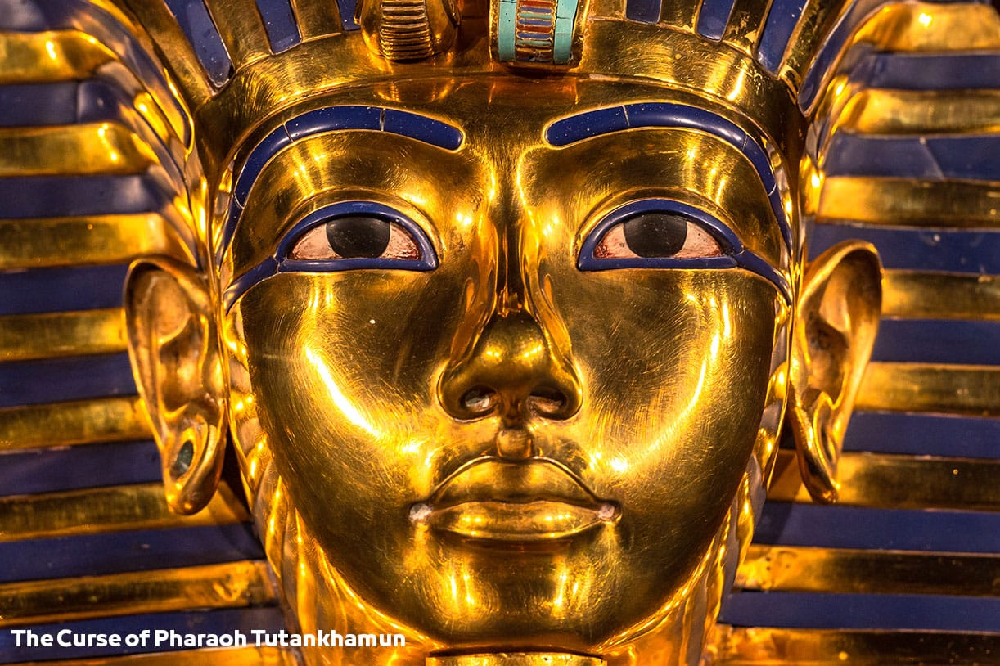
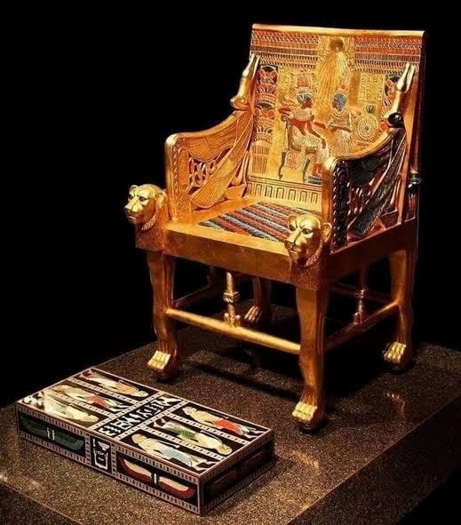
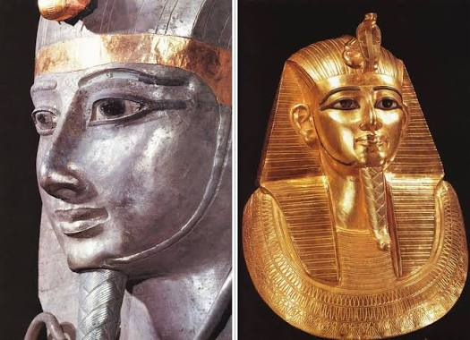
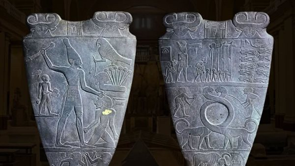
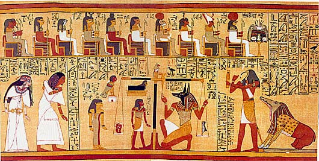
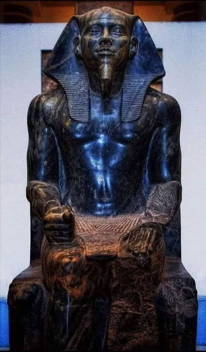

Step into the dawn of civilization, where the Nile gave life to a legendary empire. The Pharaonic era represents thousands of years of architectural brilliance, divine kingship, and cultural innovation that shaped the ancient world forever. From the unification of the Two Lands to the golden age of the New Kingdom, explore the stories of the mighty rulers who built the pyramids and carved their names into eternity
tutankhamun's mask around 1323 BC (18st Dynasty)
tutankhamun's mask is a golden mask that covered the king face , symbolizing royality and the afterlife

tutankhamun's throne around 1323 BC (18th Dynasty)
tutankhamun's throne is a decorated chair showing scenes of the king and queen , reflecting royal life

Psusennes's treasures : around 1323 PC (18 th Dynasty )
treasures of Psusennes are rich golden artfacts found in his tomp , showing royal wealth and craftsmanship

Narmer Palette around 3100
Narmer Palette shows the unification of upper and lower eygpt under king Narmer

Statue Of Khafre around 2550 PC
Statue Of Khafre is a seated statue showing the king with divine protection , and power

book of dead around 1550 BC
book of dead papyrus is a collection of spells to guide the dead in the afterlife
